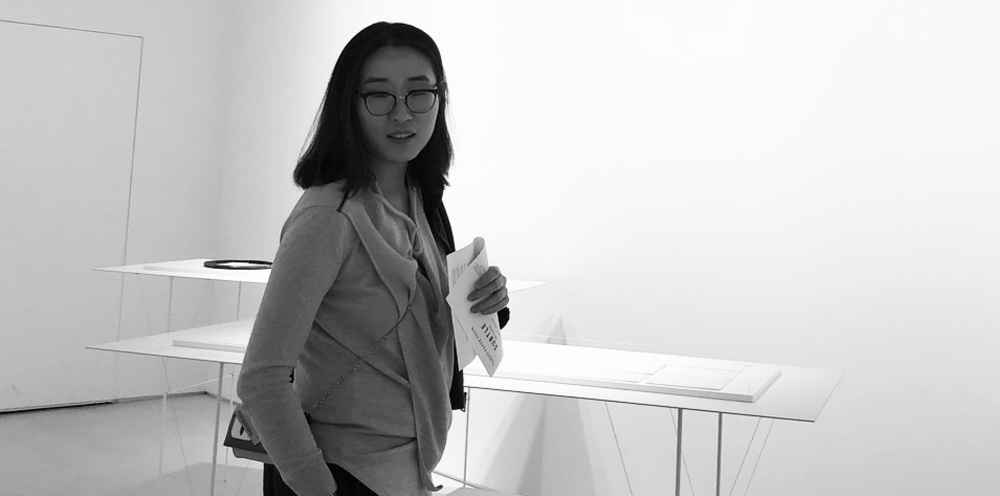

I'm an interdisciplinary designer with 8+ years of professional experience.

Fun fact about me
🎓 I earned BFA in Visual Communication Design from SAIC. I'm currently pursuing the MS in Human-Computer Interaction at DePaul.
🥳 I'm one of the first three people to earn the top tier UX Master by Baymard worldwide.
🎉 I created a AR filter which was uitilized for a company's internal program.
👩💻 I'm proud to have designed and developed this website from scratch.
🏃♀️ When I'm not designing, you can find me running, lifting weights, and looking for ways to improve myself.